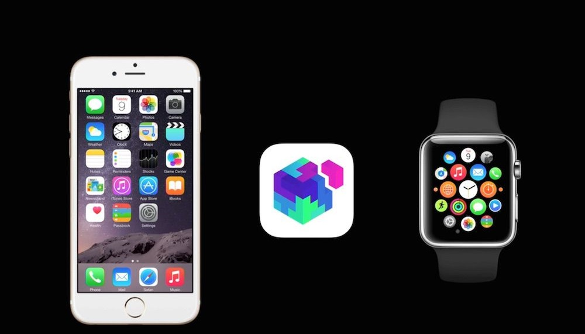
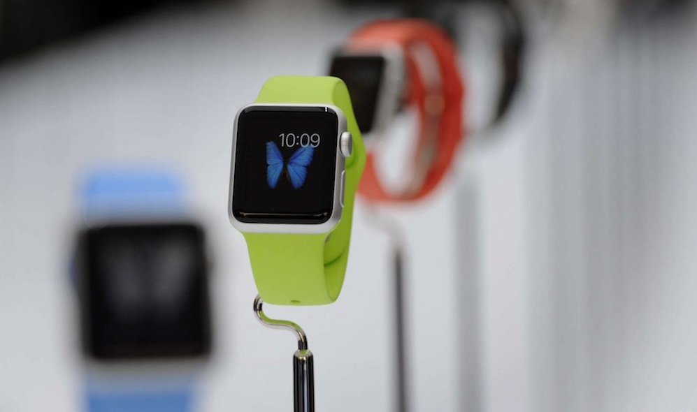
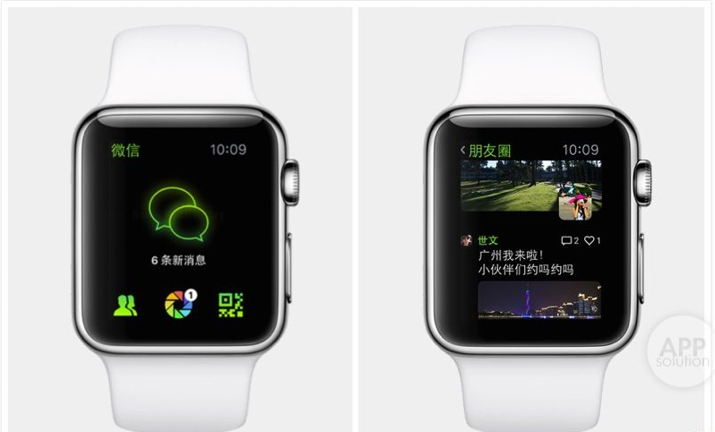
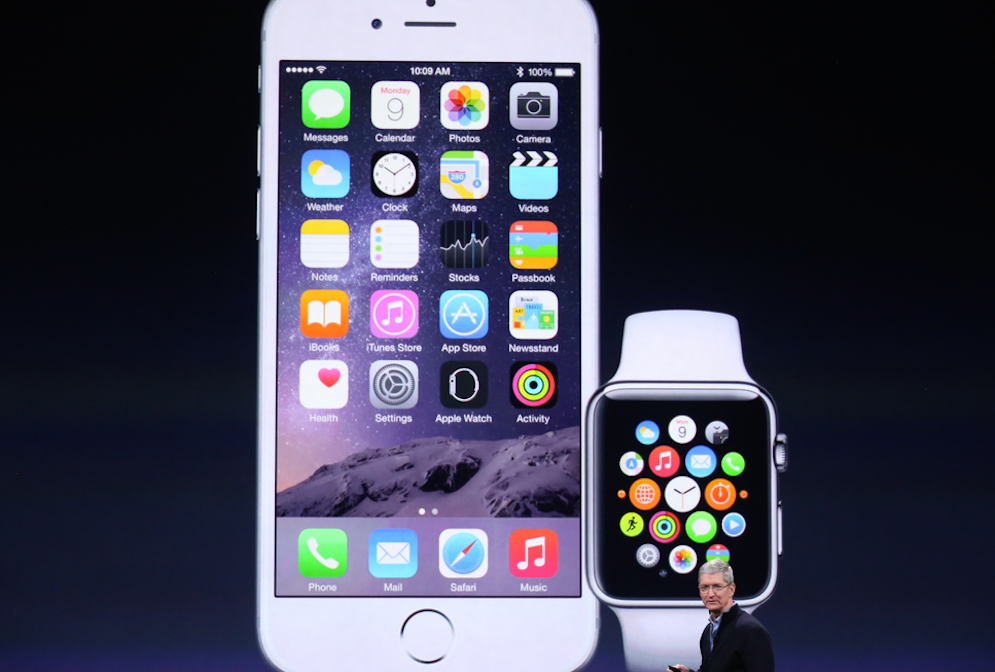

Apple Watch 来了，仿佛是开发者的又一个蓝海。
作为 app 经济的缔造者，苹果通过 iOS + App Store 的方式将用户与开发者聚拢起来，构建一个移动互联网的应用生态，不仅让 iPhone 成为了最受欢迎的智能手机之一，并同时养活了一大批应用开发者，app 经济由此成为了智能手机时代最成功的商业模式之一。
当苹果去年11月正式发布在 Apple Watch 上开发应用的 WatchKit 时，在 iOS 平台上争得头破血流的开发者们仿佛看到了下一个大陆——从近 150 万款应用中突出重围如同中彩票一般艰难。

一次不超过 10 秒的交互
根据苹果的说明，app 在 Apple Watch 上的交互方式有三种：WatchKit App，Glance 、可操作的通知（Actionable Notifications）。开发者可以根据需求来选择其中的一种或多种。当 WatchKit app 在手表上运行的时候，iPhone 上的 app 同时会在后台运行，对手表上发生的交互作出响应。
时间是 Apple Watch 交互设计的核心。Bloomberg 的文章中提到，在开发指南中，苹果建议开发者不要设计让用户一次停留超过 10 秒的交互。而从苹果官网推荐的第三方应用上，也可以看到对效率的重视：有计时、提醒功能的应用占到了一小半。即使是几个益智类小游戏，也是为了帮用户充分利用等待的无聊时间。从这个意义上来说，Apple Watch 回归了手表的本原，让人们从手机上无尽的 app 中解脱出来，重新获得对时间的掌控。
Apple Watch 并不是所有 iOS 开发者的机会，因为开发者所要做的，并不仅仅是把 iPhone 应用移植到 Apple Watch 上。
什么是适合 Apple Watch 的 app，什么不是
3 月 9 日，随着 Apple Watch 的正式发布，苹果在官网上展示了 28 款第三方应用的 demo。涵盖了效率、出行、运动、饮食健康、音乐、新闻、游戏等类别，但这些应用与 iPhone 上最常见的应用重合度很低。尽管在 iPhone 上最热门的社交、娱乐类应用都开发了自己的 Watch app，但苹果官网上并没有它们的身影。
手表的屏幕太小、电量有限，只能使用语音和简单的手势交互，一些在手机上最受欢迎的应用注定不适合手表：
• 大型游戏
• 多数社交应用
• 长篇阅读
• 生产力工具
• 图片分享和处理
• 视频等多媒体内容
• 其他费时费电的应用
比如，虽然 Instagram 的 Watch app 可以显示好友最新的图片、推荐值得关注的账号，并实时看到点赞和评论。但在在手表上刷 Instagram 恐怕就像在 iPod nano 上翻相册一样体验堪忧。可以想象，也很少有人会与愿意在手表上刷微博、看文章。就算可以在等红绿灯的时候安全地刷一下朋友圈，能做的也只有点赞和看回复——归根结底，它们并不是真正为手表设计的。

苹果认为好的 Apple Watch app 至少可以做这些事情：
- 出差时用 SPG 预订喜达屋酒店，一下飞机，手表就会显示出去酒店的地图。在途中，它就可以自动办理了入住并显示房间号。到达时，不需要经过前台就可以直接去房间，用手表当房卡打开房门；
- 在 iPhone 上用 Procreate Pocket 画画，Apple Watch 可以成为选择绘画工具和色彩的遥控器，从而把整个手机屏幕变成画布，让你更加专注地创作；
- 用 MLB.com At Bt，可以在开会的时候时不时瞥一眼喜欢球队的比分，并向老板谎称刚刚是在查邮件；
- 当你在聚会上遇到心仪的姑娘时，只要优雅地轻划、再轻点，就可以让她看到你价值 11 万的 Apple Watch Edition，欣然扫描二维码加你的微信。
开发者说，最适合 Apple Watch 的场景
从设计原则上来说，WatchKit app 和 iPhone 上的 app 有着本质上的区别。iPhone 上的 app 常常以用户每天花在上面的时间来衡量用户黏性，Apple Watch 上的 app 却以帮用户节省时间为目标。智能手机上的 app 被动地让用户一次次去检查新消息，手表上的 app 则会主动预测，在必要的时候提醒你做该做的事。有了 Apple Watch，用户不再需要满屏找 app，而只要等 app 来找你。
因此，跟踪、提醒和身份验证，是最适合 Apple Watch 上 app 的三个场景。
iOS 社交应用秒视的开发者周楷雯说：Apple Watch 是一个新平台，非常期待在上面开发有趣的 App。但由于它限制视频不能显示，所以目前还不会开发秒视的 Apple Watch 版。如果有机会开发一款 Apple Watch 产品，他会考虑增加亲密感的情侣 App 。
周楷雯认为，开发者没有必要盲目去做 Apple Watch app，因为并不是所有的事情都适合在 Apple Watch 上完成。他说：“除了快速回复信息，打车，健康类的之外，其他的我都会用 iPhone 来完成。小屏幕时间成本很高的。”
“目前 iOS 开发者都在憋 Watch app，我很期待能出来一个，确实不需要在 iPhone 上完成，并且实实在在有用的东西。”
与其说苹果重新发明了手表，不如说重新发明了 app

如 Wired 的文章所说，“手表的核心是行动，而不是 app。” 与其说苹果用 Apple Watch 重新发明了手表，不如说它重新发明了 app。
未来 app 的设计将不再追求将用户引向某个目的地，在里面花上大把的时间，而是引导用户迅速行动。实际上，iOS 8 和 Android KitKat 的通知中心已经体现了这种进化：允许人们直接在通知里与 app 互动，而不是非得打开它。自成一体的 app 将越来越少，与系统紧密结合的 app 会越来越多。
这不禁让人想起曾经被认为无聊透顶的 Yo，它现在已经进化成了一个可以集成诸多 app 的通知中心，用户只要 Yo 一下就可以完成对绑定应用的简单指令——与 Apple Watch 的交互方式异曲同工。有了 Apple Watch，用户甚至可能不需要在手机上打开某些 app 了。
这给开发者提出了难题：如何将在手机上复杂的操作转化成手表上简单的手势，并考虑到不同的时间、地点、场景的变化让用户作出相应的动作？如何同时为拥有 Apple Watch 和没有 Apple Watch 用户设计 app 并保持用户体验的一致性？如何单独为 Apple Watch 设计全新的 app？
Apple Watch 的本质——智能手机的延伸
不过，尽管 Apple Watch 是一个全新的平台，它并不是一个独立的设备，手表上的 app 必须依赖 iPhone 才能运行。因此，Watch app 的本质，是手机 app 延伸到手腕上的交互界面。
一些手机 app 开发者将受到巨大的挑战：效率、日程、出行等应用的开发者必须面临 Apple Watch 带来的冲击——使用这些应用的情景已经随着屏幕的延伸发生改变，他们必须提供更好的服务，为不同的屏幕和场景设计不同的体验。
而相当一部分开发者仍然可以专注于智能手机平台——智能手机仍然是必备品，为手机设计的阅读、输入、照片、视频、游戏等沉浸式体验并不会因为 Apple Watch 发生本质变化。这些应用也并不适合在 Apple Watch 上使用。
而开发者也完全可以抛开 iOS 上的负担，为 Apple Watch 设计全新的 app 。
Apple Watch 的屏幕提供了一个全新的媒介。它会改变人与手机的交互方式：Apple Watch 的用户不再需要强迫症式地去检查手机里的新消息，而只需要低头扫一眼手表就可以处理大多数事务；智能手机不再是浪费时间的无底洞，可以用来做更需要专注、更花时间的事情。它也将改变人与人之间的交互方式：你将没理由再低头玩手机而忽视眼前人——在手表上，唯一重要的只有当下需要行动的事。
而那些只是想把 iOS app 搬过来的开发者，还是别掺和 Apple Watch 的开发了。
来源：http://www.php100.com/html/it/hulianwang/2015/0313/8780.html

点我分享笔记